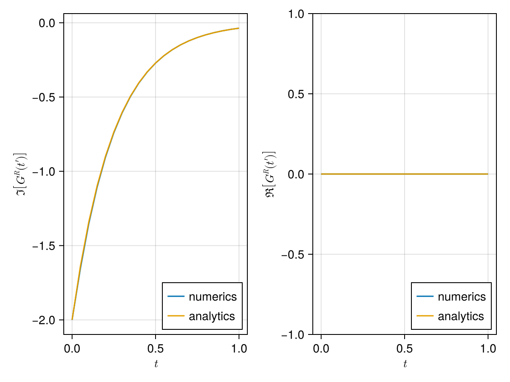
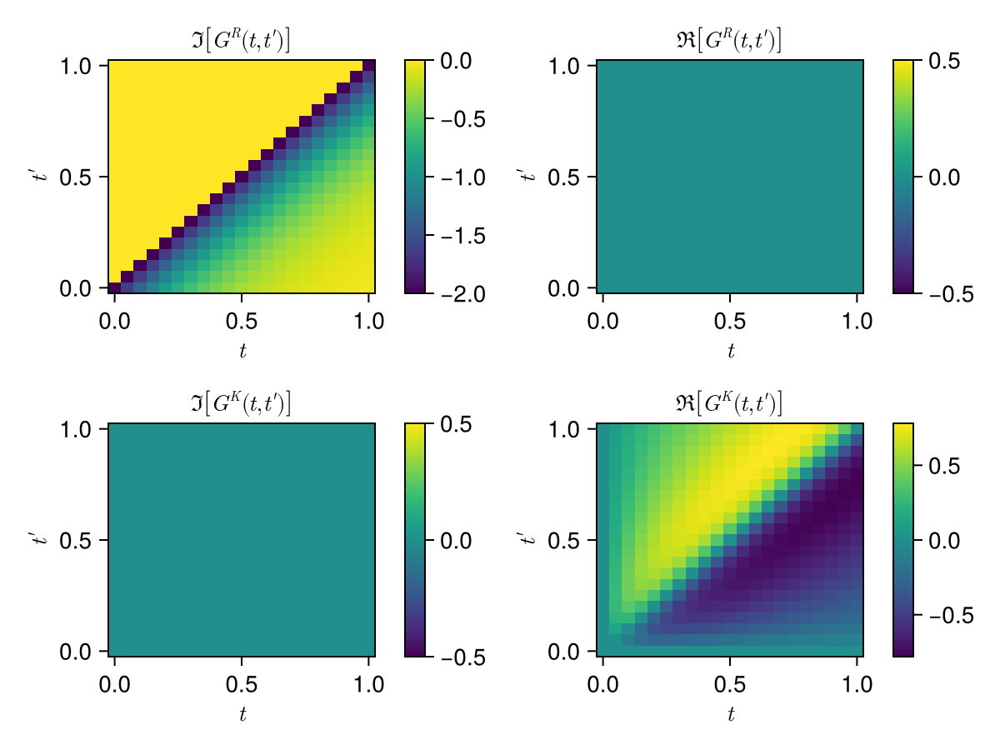
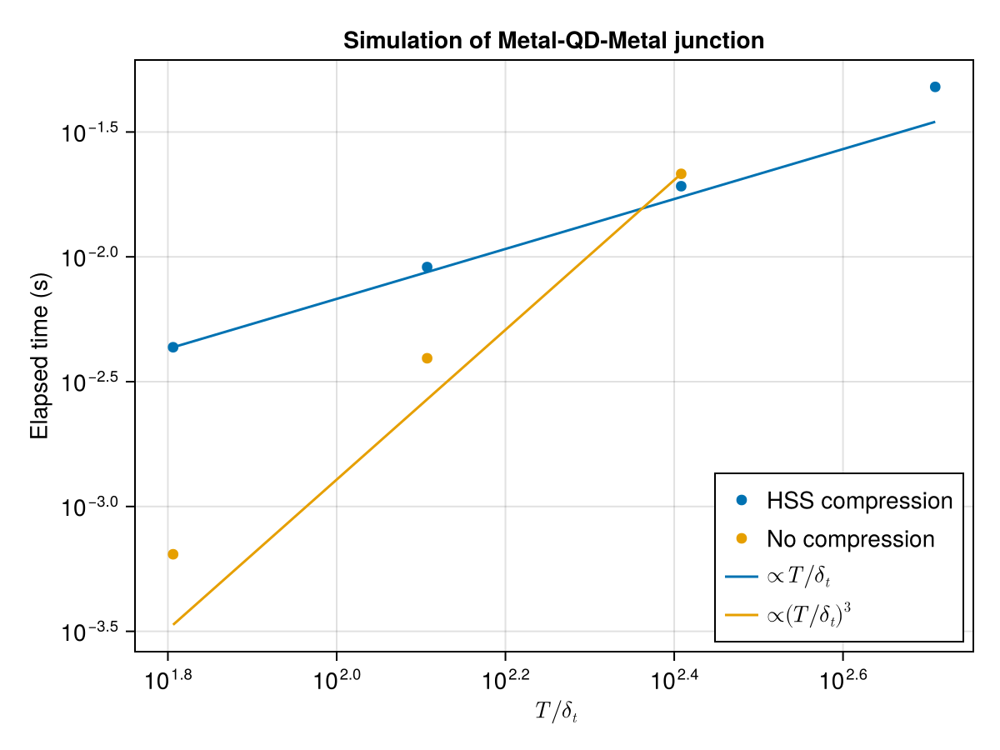
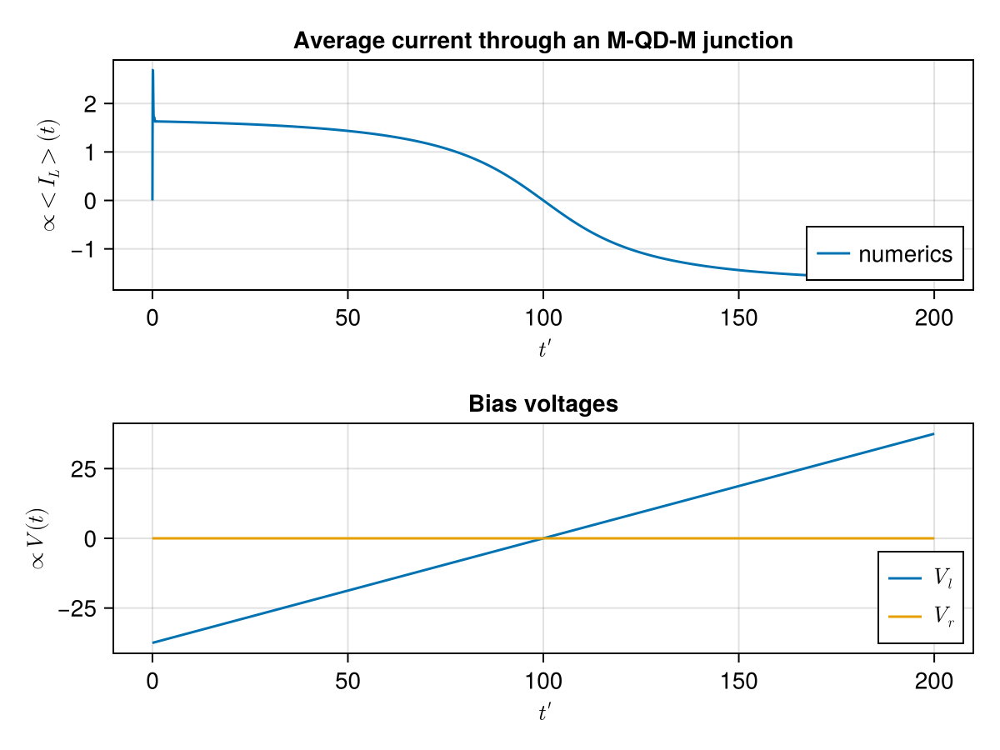

Metal - Quantum Dot - Metal junction
We consider a junction formed by a quantum dot hosting a spin-degenerate state connected to two leads. The system Hamiltonian is
\[H = H_L + H_D + H_T + \sum_l \mu_l N_l\]
with the leads Hamiltonian $H_L$, the tunnel coupling $H_T$ between leads and dot, and the isolated dot $H_D$:
\[\begin{aligned} H_L &= \sum_{\alpha,l,s} \epsilon_{\alpha,l} n_{\alpha,l,s}, & H_D &= \varepsilon \sum_s d_s^\dagger d_s, & H_T &= \sum_{\alpha,l,s} \left\{ t_{\alpha,l} \psi_{\alpha,l,s}^\dagger d_s + \text{h.c.} \right\}, \end{aligned}\]
The energy offset is removed with the unitary transform $U(t) = \exp(-i \sum_l \hat N_l \int^t \mu_l(\tau) d\tau / \hbar)$, which moves the bias into time-dependent tunneling phases $\mathcal T_{\alpha,l}(t) = t_{\alpha,l} e^{i\sigma_z \phi_l(t)/2}$ with $\phi_l(t) = 2e \int^t V_l(\tau) d\tau/\hbar$.
Integrating out the leads yields the Dyson equation for the dot
\[G = g + g \Sigma G, \qquad \Sigma_l = \mathcal T_l^\dagger g_l \mathcal T_l .\]
On the Keldysh contour, the rotated Green functions decompose into retarded, advanced and kinetic components satisfying
\[\begin{align} G^R &= g^R + g^R \Sigma^R G^R, & G^A &= (G^R)^\dagger, & G^K &= (1+G^R\Sigma^R) g^K (1+\Sigma^A G^A) + G^R \Sigma^K G^A . \end{align}\]
The bare dot Green function is $g^R(t) = -2ie^{-i\varepsilon t/\hbar}$ (the factor 2 comes from the spin) and, in the wideband limit, the lead self-energies are
\[\begin{align} \Sigma^R_l(t,t') &= -i\Gamma_l \delta(t-t'), & \Sigma^K_l(t,t') &= -2i\Gamma_l e^{i(\phi_l(t)-\phi_l(t'))/2} \rho_\beta(t-t'), \end{align}\]
where $\tanh(E\beta/2) = \int \rho_\beta(t) e^{itE/\hbar}$.
In the time domain, on $N = T/\delta t$ steps, matrix compression reduces the cost of the Dyson resolution from $\mathcal O(N^3)$ to $\mathcal O(N\log N)$.
The simulation parameters are gathered in a single structure. The time axis runs from 0 to T with step δt, and the self-energies are switched on at t = 0.
using NonEquilibriumGreenFunction
using LinearAlgebra
using CairoMakie
using LaTeXStrings
using QuadGK: quadgk
using SpecialFunctions
#HSS compression does not leverage efficiently the BLAS multithreading.
BLAS.set_num_threads(1)Parameters
module Junction
using NonEquilibriumGreenFunction
using LinearAlgebra
struct Parameters
δt::Float64
T::Float64
Γl::Float64
Γr::Float64
β::Float64
ϕl
ϕr
end
default_compression() = HssCompression(leafsize=32)
function Parameters(; δt, T, Γl=1, Γr=1, β=1000, ϕl, ϕr)
return Parameters(δt, T, Γl, Γr, β, ϕl, ϕr)
end
axis(p::Parameters) = 0:p.δt:p.T
function simulate_junction(p::Parameters; cpr=default_compression())
#retarded
Σ_R_right = LocalKernel(axis(p), t -> -1im * p.Γr, compression=cpr)
Σ_R_left = LocalKernel(axis(p), t -> -1im * p.Γl, compression=cpr)
Σ_R = Σ_R_left + Σ_R_right
g = RetardedKernel(axis(p), Stationary(τ -> ComplexF64(-2im)), compression=cpr)
G_R = solve_dyson(g, g * Σ_R)
#kinetic
ρ = AcausalKernel(axis(p), Stationary(τ -> thermal_kernel(τ, p.β) .|> ComplexF64),
compression=cpr)
coupling_left = LocalKernel(axis(p), t -> sqrt(p.Γl) * exp(1im * p.ϕl(t) / 2), compression=cpr)
coupling_right = LocalKernel(axis(p), t -> sqrt(p.Γr) * exp(1im * p.ϕr(t) / 2), compression=cpr)
Σ_K_left = -2im * coupling_left' * ρ * coupling_left
Σ_K_right = -2im * coupling_right' * ρ * coupling_right
Σ_K = Σ_K_left + Σ_K_right
G_K = G_R * Σ_K * G_R'
return (; G_R, G_K, Σ_R_left, Σ_K_left, Σ_R_right, Σ_K_right)
end
function compute_average_current(results)
function f(G_R, G_K, Σ_R, Σ_K)
_Σ_R_time_G_R = Threads.@spawn Σ_R * G_R
_G_R_time_Σ_R = Threads.@spawn G_R * Σ_R
_G_R_time_Σ_K = Threads.@spawn G_R * Σ_K
_G_K_time_adjoint_Σ_R = Threads.@spawn G_K * adjoint(Σ_R)
_Σ_K_time_adjoint_G_R = Threads.@spawn Σ_K * adjoint(G_R)
_Σ_R_time_G_K = Threads.@spawn Σ_R * G_K
Σ_R_time_G_R = fetch(_Σ_R_time_G_R)
G_R_time_Σ_R = fetch(_G_R_time_Σ_R)
G_R_time_Σ_K = fetch(_G_R_time_Σ_K)
G_K_time_adjoint_Σ_R = fetch(_G_K_time_adjoint_Σ_R)
Σ_K_time_adjoint_G_R = fetch(_Σ_K_time_adjoint_G_R)
Σ_R_time_G_K = fetch(_Σ_R_time_G_K)
return -((1 // 2) * ((adjoint(Σ_R_time_G_R)) - Σ_R_time_G_R) + G_R_time_Σ_K +
G_K_time_adjoint_Σ_R + -(Σ_K_time_adjoint_G_R + Σ_R_time_G_K) +
(3 // 2) * (G_R_time_Σ_R - adjoint(G_R_time_Σ_R)))
end
I_avr_op = f(results[:G_R], results[:G_K], results[:Σ_R_left], results[:Σ_K_left])
diag(matrix(I_avr_op))
end
endMain.var"##142".JunctionEquilibrium simulation
The examples run in the docs environment. This script is executed at documentation-build time; the full source is docs/lit/mqdm.jl.
p = Junction.Parameters(δt=0.05, T=1, ϕl=t -> 0, ϕr=t -> 0);
println("N = $(Junction.axis(p) |> length)")
results = Junction.simulate_junction(p, cpr=HssCompression());N = 21
The retarded Green function of the isolated dot decays as $-2e^{-\Gamma t}$ with $\Gamma = 2(\Gamma_l + \Gamma_r)$ (spin factor included).
function plot_plot_GR(p, results)
f = Figure()
Γ = 2 * (p.Γl + p.Γr)
f_ax = Axis(f[1, 1], ylabel=L" \Im \left[ G^R(t')\right]", xlabel=L"t")
G_R = matrix(results[:G_R])[:, 1]
ax = Junction.axis(p) |> collect
im_G_R = imag.(G_R)
lines!(f_ax, ax, im_G_R, label="numerics")
lines!(f_ax, ax, -2 * exp.(-Γ .* ax), label="analytics")
axislegend(position=:rb)
f_ax = Axis(f[1, 2], ylabel=L" \Re \left[ G^R(t')\right]", xlabel=L"t")
re_G_R = real.(G_R)
lines!(f_ax, ax, re_G_R, label="numerics")
lines!(f_ax, ax, 0 .* ax, label="analytics")
axislegend(position=:rb)
f
end
plot_plot_GR(p, results)
The full maps $G^R(t,t')$ and $G^K(t,t')$:
function plot_results_maps(results)
f = Figure()
f_ax = Axis(f[1, 1], title=L" \Im \left[ G^R(t,t')\right]", xlabel=L"t", ylabel=L"t'")
G_R = matrix(results[:G_R])
ax = Junction.axis(p) |> collect
hm = heatmap!(f_ax, ax, ax, imag.(G_R))
Colorbar(f[1, 2], hm)
f_ax = Axis(f[1, 3], title=L"\Re \left[ G^R(t,t')\right]", xlabel=L"t", ylabel=L"t'")
hm = heatmap!(f_ax, ax, ax, real.(G_R))
Colorbar(f[1, 4], hm)
f_ax = Axis(f[2, 1], title=L" \Im \left[ G^K(t,t')\right]", xlabel=L"t", ylabel=L"t'")
G_K = matrix(results[:G_K])
hm = heatmap!(f_ax, ax, ax, imag.(G_K))
Colorbar(f[2, 2], hm)
f_ax = Axis(f[2, 3], title=L"\Re \left[ G^K(t,t')\right]", xlabel=L"t", ylabel=L"t'")
hm = heatmap!(f_ax, ax, ax, real.(G_K))
Colorbar(f[2, 4], hm)
f
end
plot_results_maps(results)
Benchmarks
We benchmark the full resolution increasing simulation length, including the initial construction of the kernels. To get out of equilibrium, a small bias voltage is applied. The HSS-compressed resolution scales as $T/\delta_t$ while the uncompressed one scales as $(T/\delta_t)^3$.
CI and interactive runs use a reduced grid; the committed figure
(examples/QD_benchmark.svg) shows the full sweep.
if haskey(ENV, "CI")
tab_T_hss = 0.1 .* [2^k for k in 6:9]
tab_T_full = 0.1 .* [2^k for k in 6:8]
else
tab_T_hss = 0.1 .* [2^k for k in 6:14]
tab_T_full = 0.1 .* [2^k for k in 6:11]
end
function benchmark_hss(T)
param = Junction.Parameters(δt=0.1, T=T, ϕl=t -> 0, ϕr=t -> 0.1 * t);
ts = Float64[]
for _ in 1:3
push!(ts, @elapsed Junction.simulate_junction(param))
end
minimum(ts)
end
function benchmark_full(T)
param = Junction.Parameters(δt=0.1, T=T, ϕl=t -> 0, ϕr=t -> 0.1 * t);
ts = Float64[]
for _ in 1:3
push!(ts, @elapsed Junction.simulate_junction(param, cpr=NONCompression()))
end
minimum(ts)
end
benchmark_hss(tab_T_hss[1])
benchmark_results_hss = benchmark_hss.(tab_T_hss)
benchmark_full(tab_T_full[1])
benchmark_results_full = benchmark_full.(tab_T_full)
function plot_benchmark(tab_T_hss, results_hss, tab_T_full, results_full, δt)
f = Figure()
f_ax = Axis(f[1, 1], xscale=log10, yscale=log10,
title="Simulation of Metal-QD-Metal junction",
xlabel=L"T/\delta_t",
ylabel="Elapsed time (s)")
scatter!(f_ax, tab_T_hss ./ δt, results_hss, label="HSS compression")
scatter!(f_ax, tab_T_full ./ δt, results_full, label="No compression")
lines!(f_ax, tab_T_hss ./ δt, tab_T_hss ./ tab_T_hss[1] .* results_hss[1],
label=L"\propto T/\delta_t")
lines!(f_ax, tab_T_full ./ δt, tab_T_full .^ 3 ./ tab_T_full[3]^3 .* results_full[3],
label=L"\propto (T/\delta_t)^3")
axislegend(position=:rb)
f
end
f = plot_benchmark(tab_T_hss, benchmark_results_hss, tab_T_full, benchmark_results_full, 0.1)
save(joinpath(@__DIR__, "mqdm_benchmark.svg"), f)
f
Voltage biased junction
When a voltage biased is applied accross a junction, a current appears. The tunnel coupling phases evolve according to $\frac{d\phi_l(t)}{dt} = \frac{2e}{\hbar}U_l(t)$ and the average current from lead $l$ is
\[\left\langle I_l(t) \right\rangle = \frac{e}{2\hbar} \mathrm{tr}^K \left\{ \tau_z \int G(t,\tau) \Sigma_l(\tau,t) - \Sigma_l(t,\tau)G(\tau,t) d\tau \right\}.\]
Tmax = 200
Vmax = 75
Ur(t) = 0
Ul(t) = Vmax * (t / Tmax - 1 // 2)
δt = 0.1 * 2π / Vmax
p = Junction.Parameters(
δt=δt,
T=Tmax,
ϕl=t -> quadgk(Ul, 0, t)[1],
ϕr=t -> quadgk(Ur, 0, t)[1])
println("N = $(Junction.axis(p) |> length)")
results = Junction.simulate_junction(p, cpr=HssCompression());
iavr = Junction.compute_average_current(results)
function plot_results(iavr, Ul, Ur)
f = Figure()
f_ax = Axis(f[1, 1], title="Average current through an M-QD-M junction",
xlabel=L"t'", ylabel=L"\propto <I_L>(t)")
ax = Junction.axis(p) |> collect
lines!(f_ax, ax, real.(iavr), label="numerics")
axislegend(position=:rb)
f_ax = Axis(f[2, 1], title="Bias voltages", xlabel=L"t'", ylabel=L"\propto V(t)")
lines!(f_ax, ax, Ul.(ax), label=L"V_l")
lines!(f_ax, ax, Ur.(ax), label=L"V_r")
axislegend(position=:rb)
f
end
f = plot_results(iavr, Ul, Ur)
save(joinpath(@__DIR__, "average_current_QD.svg"), f)
f